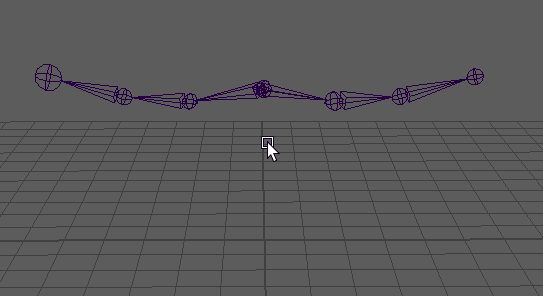

断开对称连接
创建对称的关节后，通过移除对称连接，可以单独修改每个关节。
- 选择源关节并执行以下操作之一：
- 单击鼠标右键，然后从标记菜单中选择“破坏对称性”(Break Symmetry)。
- 从主菜单中选择“按类型删除 > 约束”(Delete by Type > Constraints)。
此时对称连接已断开。
注： 若要破坏整个层级上的所有对称连接，请在根关节上单击鼠标右键，然后从关节标记菜单中选择“层级”(Hierarchy)，然后再选择“破坏对称性”(Break Symmetry)。

若要破坏关节链上的对称，请单击鼠标右键，然后选择“层级”(Hierarchy)